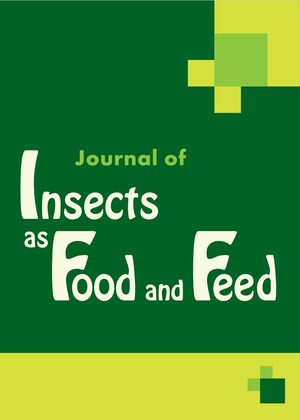
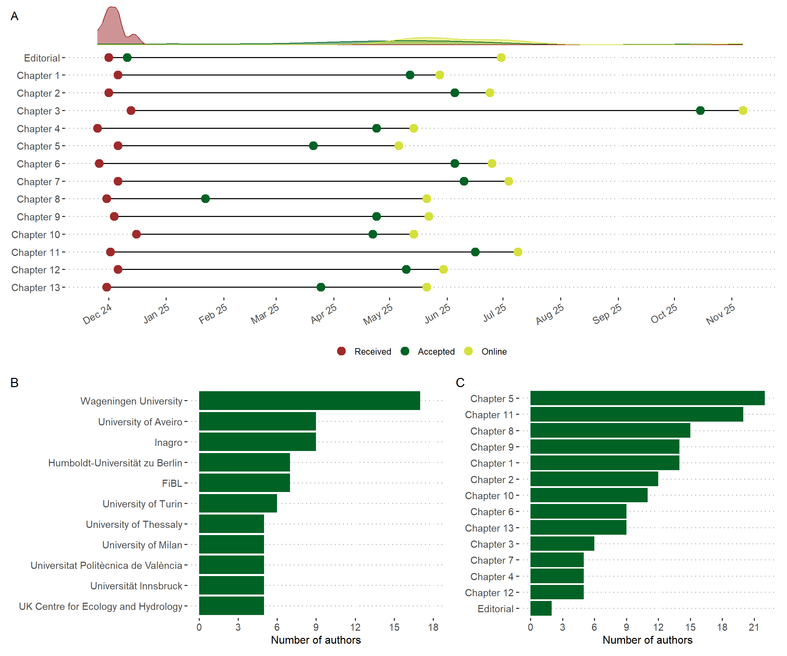

BugBook: Setting the gold standard for research on farmed insects
![]()
What to expect
The BugBook project was initiated and coordinated by David Deruytter (Inagro, Belgium), and brings together expertise from across Europe and beyond to address the growing need for standardized research in the field of industrial insect rearing. Comprising 13 chapters (Table 1), the BugBook project provides a comprehensive and open access manual for researchers and professionals working on the production of insects for food and feed, with a particular focus on harmonizing methodologies and experimental design. The most frequently used words (Figure 1) illustrate the scope and thematic focus of the project.
BugBook chapters

As research on insect farming has rapidly expanded, driven by advances in genetics, processing, and sustainability, the lack of standardized data analysis and experimental protocols has become a significant barrier to progress and comparability across studies. The BugBook project directly addresses this gap by providing guidance on standardizing processing methods, refining feeding trial protocols, and outlining best practices for chemical analysis of insect biomass. It also introduces conceptual approaches to genetic research, diversity management, and selective breeding, all of which are crucial for the sustainable development of insects as food and feed. By integrating these diverse yet interconnected topics, the BugBook serves as a comprehensive resource that fosters harmonization and innovation in insect research, ultimately accelerating the responsible utilization of insects in food, feed, and waste valorization systems.
Building on a foundation of good practices, the BugBook provides detailed guidelines for maintaining laboratory populations of key species such as Tenebrio molitor and Hermetia illucens, ensuring reproducibility and integrity in research (Table 1). It covers critical aspects of experimental design for insect production, including nutritional requirements, hazard and ecotoxicological safety, and the assessment of insect behavior under mass-rearing conditions. The project also addresses the evaluation and application of insect frass in agricultural and waste systems, emphasizing the importance of microbiome analysis and the interactions between multiple environmental stressors.
International network
In total, 109 authors from 49 institutions located in 21 countries have contributed to the BugBook. Authors collaborating on a specific chapter clearly cluster together spatially (Figure 2), while some authors contributing to two or more chapters (light green) become visible as “hubs” connecting clusters of authors in between chapters (dark green).
Find an expert near you
The geographical distribution (Figure 3) of people that have contributed to the BugBook project (Table 2) clearly shows a Europe-centered focus. The majority of authors are located in The Netherlands, Italy, and Belgium. The institution with the highest number of contributions was Wageningen University.
Further information
Timeline and stats
All manuscripts were submitted within December 2024 and were published online latest 11 months after initial submission.

Data used for this post
The raw data used in this post can be downloaded here. Feel free to use, adapt, and share this work in any way you like.
Links to other projects
- Black Soldier Fly Biowaste processing: A Step-by-Step Guide (2nd Edition) by Dortmans et al. (2021)
- COST Action CA23127 - Group on Insect Nutrition: To Open Nutritional Innovative Challenges (GIN-TONIC)
- COST Action CA22140 - Improved Knowledge Transfer for Sustainable Insect Breeding (Insect-IMP)
Reuse
Citation
BibTeX citation:
@misc{klammsteiner2025,
author = {Klammsteiner, T.},
title = {BugBook: {Setting} the Gold Standard for Research on Farmed
Insects},
date = {2025-11-10},
url = {https://tklammsteiner.github.io/bugbook},
doi = {10.5281/zenodo.17571652},
langid = {en}
}
For attribution, please cite this work as:
Klammsteiner, T. 2025. “BugBook: Setting the Gold Standard for
Research on Farmed Insects.” Zenodo (blog). November 10,
2025. https://doi.org/10.5281/zenodo.17571652.